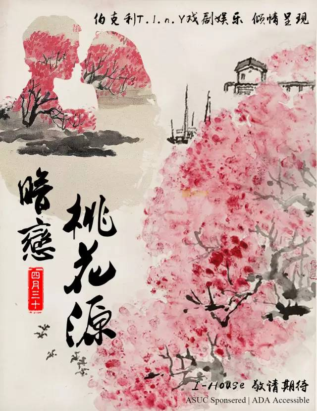

在一个美好的却又残酷的年纪，欲望膨胀又要面对现实，胸怀大志却有时迷失方向。
内心的追寻像是梦里花一样，若隐若现的指引着我们。我们都会迷茫，也终会找到方向。
像是《暗恋桃花源》中每一个人的追寻与宿命一样，命运总有波折，人生却没有捷径。
一场暗恋桃花源过后，很多朋友对剧的内涵和一些巧思的立意都有疑问。其实作为一部经典了30年的戏剧作品，从学者到剧评人再到观众都曾为此剧写下了不同的剧评。
每一个剧评都是一次对故事的二度创作。一个优秀剧本的魅力一定程度上也在于“一千个观众心目中有一千个哈姆雷特”。
由于每个观众视角的不同，对这部剧的理解也会有不同程度的差异，也从某种程度上反映了自己内心世界。
当人物立体起来，站在舞台上诉说着自己的故事，他们便跳出了剧作家的思想。一些细节，话语带给不同观众的理解并不尽是创作时刻意安排的，而是“人物自己的声音”。
全剧围绕着“追寻”展开，剧中几乎每个人物都有自己所追寻的东西，但却由于种种原因求而不得。
而红裙的陌生女子是将这一立意直接呈献给观众的载体，结尾做出了一点小修改，就是让陌生女子从观众席离开，让戏剧舞台照进现实，
每个人都可以由此思考什么是你的“刘子骥”，你是否承载着别人的追寻，你又在追寻着什么？你所追寻的真的是你想象的样子吗？
在抛出了一个个问题后，这部剧本身并没有直接给出一个答案，却引导着观众进行思考，反思自己的生活。诚然，每段人生不尽相同，不能一概而论。
相比于明确的表达一个观念，输出作者的价值观，戏剧更应该是一面镜子，把生活中的种种经历提炼后反射出来，让每个人更清楚的审视自己的生活和该继续前进的道路。
在这个快产快消的浮躁时代，每个人坐在咖啡馆里好像不谈融资上市，房子车子薪水都显得不够融入这个环境。但是，几乎每个人都有心中的桃花源，一个凌驾于普世成功价值观之外的美好园地。
二十几岁的年纪，本就有着对未来无限的渴望；不必带着六十岁的现实去审视自己内心的桃花源。面对追寻，还有时间和机会思索，然后勇敢地向前。
一个没钱租专业戏剧场的剧组，一个每一分钱都花在刀刃上的剧组，一个躲学校保安排练打游击的剧组……还是顽强的生存，茁壮的生长着。
也正是这些困难的客观条件让每个人全身心的投入，希望真正用内容打动每一位观众。每周9个小时的排练，19套定制服装连补丁都是亲手打上去的，
70多件道具事无巨细的统筹管理，最后一周每天两趟搬运道具，深夜在学校排练到警察下班......这些经历回想起来都是生命中的纪念。
感谢团队里的每一个人愿意做好一件件琐碎但幸福的小事，给每一位观众带来这个经典的故事。每一份踏实的用心都值得尊重，如果有一件小事是值得认真的，
就请认真去做吧。如果你愿意认真做好一件小事，也愿意在汗水，努力中思考，这些经历总会带你走上那条你一直追寻的路。